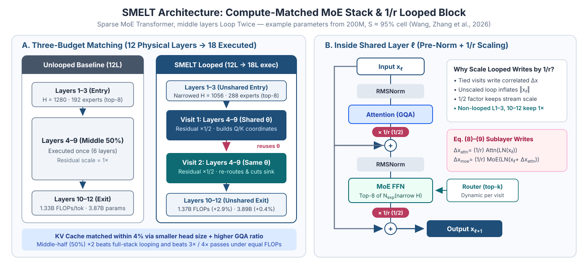
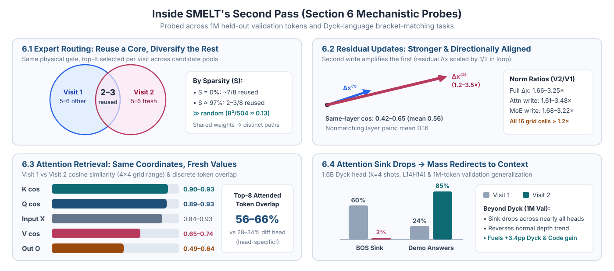
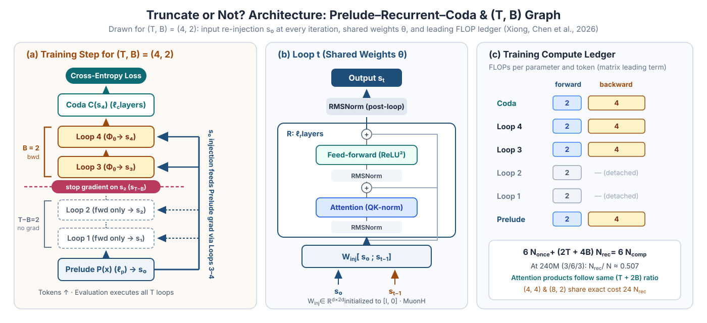
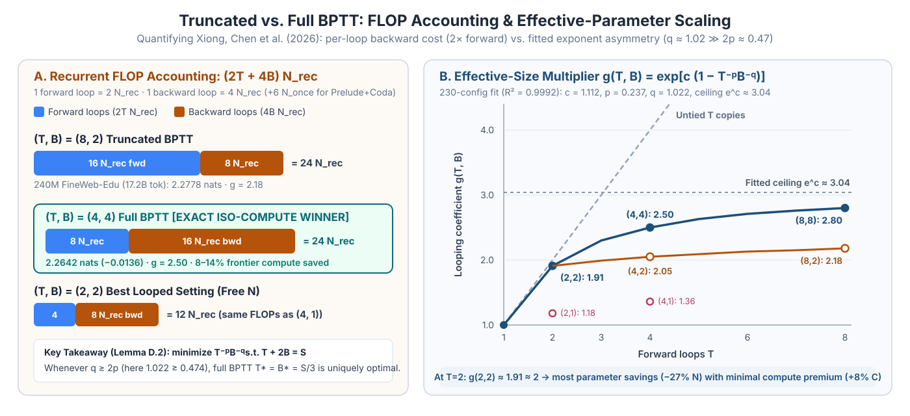
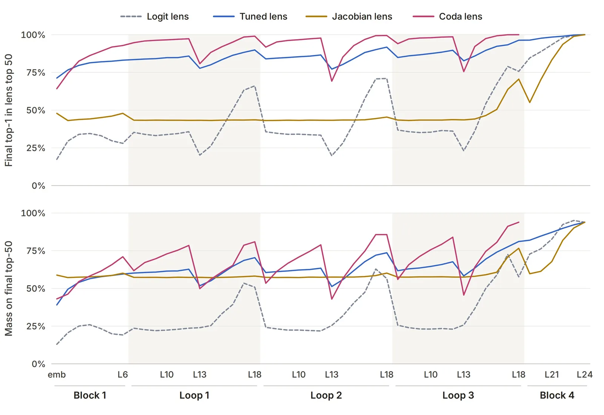

Repeating a shared block of Transformer layers across depth separates execution depth from unique parameter count[6][7]. For years, however, looped evaluations compared weight-tied models against unlooped baselines of the same stored parameter count, conflating genuine architectural benefit with the extra FLOPs and KV cache spent during repeated passes.
Three 2026 studies resolve different pieces of that puzzle and together form a complete design stack: SMELT[1] asks whether looping wins when per-token FLOPs, total parameters, and KV cache are all held equal; Truncate or Not?[2] settles how many forward and backward loops to allocate under fixed training compute; and Thinking Machines Lab's Inkling 2 Mini[3] alongside Goodfire's interpretability analysis[4] ships an open-weights looped MoE model and traces how activations coordinate across loops inside its weights.
Three Architectures at a Glance
All three systems leave the embedding-facing entry and output-facing exit layers unshared while repeating a middle core, yet each answers a different constraint: strict budget parity in MoE pretraining, gradient-horizon compute allocation in dense pretraining, and block-structured inter-loop routing in an open production model.

| Architecture | Backbone & Looped Span | State Coupling & BPTT | Headline Result |
|---|---|---|---|
| SMELT[1] | Sparse MoE (GQA, top-8); middle 50% repeated $2\times$ | $1/2$-scaled cumulative residuals; full BPTT to 215B tok | Saves 6.8–18.0% frontier FLOPs at matched FLOPs, params & KV |
| Truncate or Not?[2] | Dense Huginn-style ($58\text{M}\text{–}919\text{M}$); middle $T\in\{1..16\}$ passes | $W_{\text{inj}}[s_0; s_{t-1}]$ + RMSNorm; swept $(T,B)$ (592 runs) | Full BPTT wins iso-compute; $(2,2)$ matches $(1,1)$ with −27% params |
| Inkling 2 Mini[3][4] | 24L Hybrid MoE (8/128); Blocks 2–3 repeated $3\times$ (48L) | Depth-wise + cross-loop AttnRes ($\kappa\odot x + \gamma\odot m$); NVFP4/MXFP8 | Top <100B coding agent (48.2% DeepSWE); $d_{2027}$ switch coordinates loops |
Compute-Matched MoE Looping: SMELT
Matching FLOPs, Parameters, and KV Cache
Simply repeating $m$ of $L$ layers $r$ times increases effective depth to $L_{\text{eff}} = L + (r-1)m$ while leaving stored weights unchanged—but per-token FLOPs and KV cache grow in lockstep. On dense models under iso-depth (fixed FLOPs and KV), losing unique weights leaves each recurrence worth only $r^{0.46}$ unique-block equivalents, so dense looping loses on perplexity. SMELT breaks that lock with Mixture-of-Experts sparsity[1]:
- Match per-token FLOPs (< 4% mismatch): narrow the hidden width $H$ (e.g., at 200M, $S \approx 95\%$, $H$ shrinks from $1280$ to $1056$) so executing 18 effective layers spends nearly identical FLOPs to the 12-layer Baseline ($1.37\times 10^9$ vs. $1.33\times 10^9$ training FLOPs/token).
- Match total non-embedding parameters (< 1% mismatch): because MoE decouples stored parameters from active compute, raising expert count per layer ($192 \to 288$, still routing top-8) restores lost capacity ($3.89\text{B}$ vs. $3.87\text{B}$).
- Match KV cache (< 4% mismatch) and stabilize updates: shrink attention head size and raise the GQA ratio across the deeper execution trace, and scale every looped Attention and MoE residual update by $1/r$ ($1/2$) so tied weights do not blow up residual norms across visits.


Three systematic ablations at 200M lock the recipe[1]: (1) looping the middle 50% ($L4\text{–}9$ of 12, yielding 18 executed layers) beats full-stack looping ($1.9257$ vs. $1.9322$ validation loss at $S\approx 85\%$, and $1.8517$ vs. $1.8601$ at $S\approx 95\%$); (2) the looped model sustains a larger effective depth-to-width ratio ($12/18$ beats $8/12$, $10/15$, and $14/21$ on every metric, aided by multi-depth gradient signals back to the same shared block); and (3) two passes win ($1.9257$, DCLM Core $27.57$) over three ($1.9385$) or four ($1.9360$), because more passes under a strict FLOP cap force the model too thin.
Scaling Laws and Beyond-Loss Gains
Scaling across a $4 \times 4$ grid (100M, 200M, 600M, 1.6B active tiers $\times$ dense-FLOP control $S=0\%$ and sparse $S\approx\{85\%, 95\%, 97\%\}$, up to 53.9B non-embedding parameters, with 6 WSD cosine-decay branches to 215B tokens per run), SMELT outperforms the Baseline in every cell[1]. Defining compute-equivalent sparsity from FLOP ratio $N_{\text{act}}^{\text{eq}} = (F/F_0)N_0$, $S = 1 - N_{\text{act}}^{\text{eq}}/N$, the authors fit separate Chinchilla-style surfaces:
$$\begin{aligned} \mathcal{L}(F, S, D) &= E + \frac{A\,(1 - S)^b}{F^a} + \frac{K}{D^c}, \\ \mathcal{L}^*(C, S) &= E + f(A,K,a,b,c,S)\,C^{-\gamma}, \qquad \gamma = \frac{ac}{a+c}. \end{aligned}$$On the sparse grid ($S \approx 85\text{–}97\%$), SMELT achieves both a steeper capacity exponent ($a=0.3892$ vs. $0.3703$) and steeper data exponent ($c=0.7011$ vs. $0.6594$), lifting the frontier exponent by $+5.5\%$ ($\gamma_{\text{SMELT}} = 0.250$ vs. $\gamma_{\text{Base}} = 0.237$). Holding validation loss fixed on the frontier, SMELT saves 6.8–10.0% training compute at $10^{20}$ FLOPs and 14.7–18.0% at $10^{21}$ FLOPs (extrapolating to $19.6\text{–}23.5\%$ at $10^{22}$), while keeping virtually the same optimal tokens-per-dense-equivalent-parameter (~56–91 TPP).
Crucially, downstream gains exceed what lower validation loss alone predicts[1]. Across 96 matched pairs, SMELT wins 96/96 on DCLM Completion, 83/96 on DCLM Core, and 29/30 on above-chance MMLU. Fitting a Baseline loss-to-score sigmoid shows positive residuals that grow with scale (up to $+12.3\text{ millinats}$ on Completion and $+1.2\text{ pp}$ on Core at 1.6B, where Symbolic Problem Solving overtakes Reading Comprehension at $+1.9\text{ pp}$). Per-domain CE Gain at $10^{21}$ FLOPs peaks on structured domains—Code ($20.4\%$), Finance ($16.8\%$), Math/STEM ($16.6\%$) vs. Web ($14.8\%$)—concentrates on long documents ($1.52\times$ stronger on $512\text{–}4096$ vs. $32\text{–}256$ tokens, whereas adding Baseline parameters or experts stays flat at $0.98\times$ and $0.88\times$), and doubles from $0.9\text{ pp}$ at $0$-shot to $1.9\text{ pp}$ with few-shot demonstrations (reaching $29.8\%$ vs. $26.4\%$ on 32-shot Dyck Languages).
Inside the Second Pass
Probing 1M validation tokens across all 16 grid cells reveals a consistent internal mechanism—the second visit operates as an iterative refinement pass along coordinates discovered on visit 1 rather than overwriting or repeating the same function[1]:


- Router splits into core + fresh experts: even at $S\approx 97\%$, the second visit reuses 2–3 of the top-8 experts (orders of magnitude above uniform random $8^2/n$) while swapping 5–6 experts, generating distinct computational paths from shared weights.
- Residuals grow and stay aligned: Visit 2 writes $1.2\text{–}3.5\times$ larger norms in both Attention and MoE (driven initially by RMSNorm's element-wise gain reacting to a directional shift in $x_\ell$), while maintaining same-layer cross-visit cosine $0.42\text{–}0.65$ (mean $0.56$ vs. $0.16$ for mismatched layers).
- Q/K anchor retrieval, V updates content: recomputing $Q, K, V$ leaves queries and keys closely aligned across visits ($0.89\text{–}0.93$ cosine, matching or exceeding input $X$'s $0.84\text{–}0.93$) with 56–66% overlap in top-8 attended tokens (vs. $28\text{–}34\%$ for different heads), whereas $V$ drops to $0.65\text{–}0.74$ and $PV, O$ diverge further.
- Attention sinks collapse: in a 1.6B Dyck head ($k=4$), BOS sink mass falls from 60% to 2% while attention on demonstration answers jumps from 24% to 85%; on general text, Visit 2 broadly reduces sinks across heads, reversing the usual depth-increasing sink trend.
Truncate or Not? Training Loops Under Compute Budgets
Input Re-Injection and (T, B) FLOP Accounting
Where SMELT matches architectures at full BPTT, Xiong, Chen et al.[2] isolate the training optimization question across 592 runs ($2.7\times 10^{22}$ FLOPs) of a dense Huginn-style[7] Prelude–Recurrent–Coda Transformer spanning $58\text{M}\text{–}919\text{M}$ non-embedding parameters on FineWeb-Edu:
$$s_0 = \mathcal{P}(x),\qquad s_t = \Phi_\theta(s_{t-1}; s_0) = \operatorname{RMSNorm}\!\Big(\mathcal{R}\!\big(W_{\text{inj}}[s_0;\,s_{t-1}]\big)\Big),\qquad p = \mathcal{C}(s_T).$$

Three structural details govern how gradients flow. First, every loop re-injects $s_0$ via $W_{\text{inj}} \in \mathbb{R}^{d\times 2d}$ initialized to $[I,\,0]$ (starting purely from Prelude, then learning to blend recurrent state), while a post-block RMSNorm keeps state scale bounded across $T$ passes. Second, in a $(T, B)$ schedule ($1 \le B \le T$), the state $s_{T-B}$ is detached after $T-B$ forward-only passes, leaving only the final $B$ loops and the Coda in the backward graph—while Prelude still receives gradients directly through $s_0$ injection into the last $B$ loops. Third, at standard matrix accounting of $2$ FLOPs/param/token forward and $4$ backward, recurrent compute scales with $T + 2B$:
$$C \simeq 6 D \cdot N_{\text{comp}}, \qquad N_{\text{comp}} = N_{\text{once}} + \frac{T + 2B}{3} N_{\text{rec}}.$$Dropping two backward passes saves $8 N_{\text{rec}}$ FLOPs, which buys exactly four forward passes: $(T, B) = (8, 2)$ and $(4, 4)$ both spend $24 N_{\text{rec}}$ loop FLOPs per token ($T + 2B = 12$), and $(4, 1)$ matches $(2, 2)$ with $T + 2B = 6$. From a fixed-point perspective[2], truncating to $B$ loops sums only the first $B$ terms of the Neumann series $(I - \mathcal{J}^\star)^{-1}\partial_\theta\Phi^\star \approx \sum_{k=0}^{B-1}(\mathcal{J}^\star)^k \partial_\theta\Phi^\star$, injecting cumulative bias when $T$ is small (far from a contractive fixed point) or $B \lt T$.


Effective Parameter Law and Three Regimes
Extending a coupled size–data scaling law with a bounded multiplicative looping coefficient $g(T, B)$ fits 230 training configurations with $R^2 = 0.9992$ and in-sample RMSE $6.14 \times 10^{-3}$ nats (predicting held-out $(T,B)$ settings at $8.67\times 10^{-3}$ RMSE, nearly half the $1.65\times 10^{-2}$ error of an unbounded power-law gain)[2]:
$$\begin{aligned} L &= E + \left[A\left(\frac{N_{\text{eff}}}{N_0}\right)^{-\alpha} + H\left(\frac{D}{D_0}\right)^{-\beta}\right]^{\kappa}, \\ N_{\text{eff}} &= N_{\text{once}} + g(T,B) N_{\text{rec}}, \qquad g(T, B) = \exp\!\Big[c\,(1 - T^{-p}B^{-q})\Big]. \end{aligned}$$With fitted exponents $c \approx 1.112$, $p \approx 0.237$, and $q \approx 1.022$ (extrapolated ceiling $e^c \approx 3.04$), $q \gt 2p$ by more than a factor of two. Minimizing $T^{-p}B^{-q}$ along any equal-compute line $T + 2B = S$ proves (Lemma D.2) that whenever $q \ge 2p$, the unique optimum sits on the boundary $T^* = B^* = S/3$: backward loops buy more effective parameters per FLOP than forward-only loops, reversing the apparent paradox from earlier truncation studies.
| Optimization Regime | Optimal Strategy | Key Quantitative Result |
|---|---|---|
| Fixed forward $T$ ($T=8$) | Truncate ($B^* = 2$) | Minimizing $\chi = N_{\text{comp}}/N_{\text{eff}}$ reinvests saved bwd FLOPs into $1.51\times N,\,1.20\times D$, saving 33–35% FLOPs |
| Free $(T, B)$ at fixed $N, D$ | Full BPTT ($B = T$) | $(4,4)$ beats $(8,2)$ at all 5 sizes (240M: $2.2642$ vs. $2.2778$ nats), saving 8–14% frontier FLOPs |
| Fixed $N$ (weight cap) | Slow loops, fast data | Under full BPTT, $T^* \propto C^{0.24}$, $D^* \propto C^{0.76}$; switches $(1,1)\to(2,2)$ at ~14–17 TPP, $(2,2)\to(4,4)$ at ~200 TPP empirical |
| Free $N, D$ (dense) | $(1,1)$ FLOPs / $(2,2)$ best loop | $(2,2)$ $344\text{M}$ matches $(1,1)$ $471\text{M}$ ($2.3677$ vs. $2.3663$) with −27% params; wins by $0.0073$ nats at $+8\%$ FLOPs |
Connecting Dense (Truncate or Not?) vs. MoE (SMELT): Why does Truncate or Not? find unlooped $(1,1)$ ahead of looping on free-size dense models, while SMELT beats unlooped MoE by 6.8–18.0% FLOPs? They agree more than they disagree! Both conclude independently that $r = 2$ with full BPTT is the sweet spot. In dense models, weight tying forces $g(2,2) \approx 1.910 \lt 2$ without freeing capacity for extra weights, so 2 untied copies win purely on loss/FLOP. SMELT breaks that trade-off by spending the narrowed width's parameter budget on more sparse MoE experts while dynamic routing divergence across visits unlocks extra expressivity.
Production Circuits: Inkling 2 Mini
Attention Residuals and Cross-Loop Dataflow
Released under Apache 2.0 by Thinking Machines Lab on November 20, 2026[3][5], Inkling 2 Mini turns weight-tied looping into a 26.4B-total / 3.4B-active / 5.4B-effective-active open-weights multimodal MoE model (~20GB mixed NVFP4/MXFP8 checkpoint supporting 1M context). Its 24 physical layers ($d = 2304$, 8 of 128 experts after pruning from 384 and healing on 1T tokens, then 2.2T RL tokens) split into four 6-layer blocks: Prelude Block 1 ($L1\text{–}6$) and Coda Block 4 ($L19\text{–}24$) run once, while core Blocks 2 & 3 ($L7\text{–}18$) loop $T=3$ times to execute 48 layers per token. Ablations across 27 of 28 evals favored looping the middle 12 layers ($1.51\text{–}1.91\times$ compute-equivalent gain vs. $1.24\text{–}1.36\times$ for the final 12 layers), and an unpruned non-looped control needed $140\%$ more inference compute to match the looped model's loss on 512k-token agentic traces (at only $7.5\%$ lower training compute)[3].

Architecturally, Inkling 2 Mini replaces the single cumulative residual stream with block-level Attention Residuals[8] plus a cross-loop channel[4]. Each block $i$ maintains only a running sum $\mathbf{v}_i$ of its 6 constituent Attention and MoE writes ($\mathbf{v}_0$ is the normalized token embedding). Each sublayer computes a depth-wise softmax mixture $\mathbf{x} = \sum_j \alpha_j \hat{\mathbf{v}}_j$ over available current-loop blocks, and on loops $t \ge 2$ each core layer's four sublayer inputs ($s \in \{Q, K, V, \text{MoE}\}$) read a cross-loop message via learned query $\mathbf{u}_s$ over the previous loop's Blocks 2 and 3:
$$\begin{aligned} \mathbf{m}_s &= \sum_{j\in\{2,3\}} \beta_j\,\hat{\mathbf{v}}_j^{[t-1]}, \qquad \mathbf{z} = \mathbf{P}\big[\text{RMSNorm}(\mathbf{x});\,\text{RMSNorm}(\mathbf{m}_s)\big], \\ \mathbf{x}' &= \underbrace{\big(1 - \tanh(\mathbf{F}\mathbf{z})\big)}_{\boldsymbol{\kappa}}\odot\mathbf{x} + \underbrace{\tanh(\mathbf{G}\mathbf{z})}_{\boldsymbol{\gamma}}\odot\mathbf{m}_s, \end{aligned}$$with bottleneck $\mathbf{P}\in\mathbb{R}^{64\times 2d}$. Crucially, $\boldsymbol{\gamma}$ initializes to zero so training starts identically to an unlooped model before gradually opening the cross-loop channel[3]. Notice a structural surprise traced by Goodfire[4]: because every sublayer's input decomposes linearly into weighted earlier writes $\mathbf{x}' = \sum_w \mathbf{c}_w$ with shares $s_w = (\mathbf{c}_w \cdot \mathbf{x}')/\|\mathbf{x}'\|^2$ summing to 1, Layer 13 on Loop 2 reads almost exclusively from Loop 1's Block 3 ($\mathbf{v}_3^{[1]}$)—including Layer 18, reading directly from "future" physical layers relative to layer index 13.
![Inkling 2 Mini Loop 2 Layer 13 dataflow diagram showing depth-wise attention over v0, v1, and v2[2] combined via channel-gated fusion x'=kappa*x+gamma*m with cross-loop readers reading Loop 1 Block 3 tagged by Layer 18 on coordinate d2027.](./fig-inkling-dataflow.svg)
Weight Tagging and the d2027 Switch
How do layers learn which blocks to read without an explicit routing supervisor? Goodfire inspects coordination in both weight space and activation space across 13,233 FineWeb tokens[4]:
- Block-end weight tagging: comparing all $3{,}538{,}944$ MoE down-projection writer vectors ($24\text{ layers} \times 128 \times 1{,}152$ per layer) against all $104$ depth-wise + cross-loop reader queries ($|\cos| \ge 0.30$ top $0.001\%$, 3,490 pairs) reveals sharp concentration at block boundaries—layers 6, 12, and 18 write directly to Block 4's depth-wise readers, while Layer 18 writes heavily to Layer 13's cross-loop readers[4].
- Massive outlier switch $d_{2027}$: in RMS-normalized activations ($\sum_{i=1}^{2304} \hat{v}_i^2 = 2304$, average coord $=1$), single coordinate $d_{2027}$ reaches $+32.4$, carrying 46% of total squared norm. Since $\beta_3 = \sigma(s_3 - s_2) = \sigma\!\big(\frac{1}{\sqrt{d}}\sum_i u_i(\hat{v}_{3,i}-\hat{v}_{2,i})\big)$, $d_{2027}$ alone contributes 17% ($Q$), 19% ($V$), 11% ($K$), and 6% (MoE) of Loop 2 Layer 13's routing gap (top-5 outlier coords account for 60%, 62%, 32%, and 30%).
- Context-dependent polarity flip: most remarkably, the identical physical weights of Layer 18 write a massive positive spike onto $d_{2027}$ at the ends of Loop 1 and Loop 2 (telling future loops to attend to Block 3), then write a massive negative spike at the end of Loop 3 to clear the coordination signal before entering Coda Block 4[4].

Decoding Loops, Reasoning Bounds, and Monitorability
Evaluating intermediate hidden states across 1,250 FineWeb documents shows a stark contrast between vanilla logit decoding and learned/block lenses[4]: raw logit-lens recovers poorly mid-block except near Block 3's end in each loop, whereas tuned-lens (learned affine map) and coda-lens (running Block 4 directly on intermediate states across the sequence) track final predictions smoothly even across early loops—showing that looped latent computation remains decodable rather than opaque.

Using both Inkling 2 Mini and its research sibling TML-d24-varloop-research (trained on 1–5 passes, RL at 3 passes), Thinking Machines also pinned down what extra loops do—and do not—buy at inference time[3][5]:
- Reasoning improves, static knowledge does not: on no-CoT Think Fast tasks, 50%-reliability horizon climbs from $16\text{ s}$ ($1$ pass) to $37\text{ s}$ ($3$ passes) and holds steady out to $10$ extrapolated passes ($40\text{ s}$), while serial N-Hop Lookup accuracy keeps rising out to $10$ hops and DeepSWE v1.1 hits $48.2\%$ ($0.703$ intelligence/watt on DGX Spark)[3]. In contrast, closed-book factual benchmarks (SimpleQA Verified, AA-Omniscience) stay flat with extra loops—memory bandwidth still tracks stored parameters ($26.4\text{B}$), which Inkling 2 Mini offsets with tool-assisted search ($79.0\%$ BrowseComp, $85.3\%$ DeepSearchQA).
- Shorter, not stealthier CoTs: on matched solved GPQA Diamond problems, raising loops cuts generated reasoning tokens by more than half while leaving English readability intact and reducing backtracking ("wait", "actually", "hmm"). Meanwhile, CoT controllability remains near floor ($\le 0.1\%$ at 750–1,250 tokens) and LinuxArena stealth rates under full monitoring stay low ($0.3\text{–}1.3\%$), though Thinking Machines cautions larger RL-trained looped models remain an open oversight frontier[3].
GPQA Diamond Metric (varloop) |
1 Pass | 3 Passes | 5 Passes |
|---|---|---|---|
| Mean reasoning tokens | 3,703 | 1,731 | 1,661 |
| Mean words per sentence | 8.9 | 8.7 | 8.7 |
| Dictionary word fraction | 94.6% | 94.5% | 94.4% |
| Uncertainty markers ("wait", "hmm", ...) | 9.7 | 3.9 | 3.6 |
Design Takeaways
- Combine looping with sparse MoE—not thin dense blocks: repeating the middle 50% twice gives both dense and MoE models the best return per executed layer, but MoE lets you narrow hidden width without forfeiting total parameter memory, yielding genuine 6.8–18.0% compute savings at equal FLOPs and KV cache[1].
- Do not blindly truncate BPTT if $T$ is tunable: backward passes through the recurrent core buy over twice the effective-parameter exponent of forward-only passes ($q\approx 1.02 \gg 2p\approx 0.47$). Only truncate ($B^*=2$) when $T$ is forced large by architecture or latency constraints[2].
- Expect multi-loop coordination to concentrate on sharp channels: replacing plain residual addition with block-level attention residuals gives loops rich selective memory across passes, yet training still organically elects single outlier dimensions like $d_{2027}$ at block exits to tag state and flip polarity before decoding[4].
Citation
If you reference these notes or diagrams, please cite:
Chaoran Feng (2026). "Looped Transformers: Compute-Matched Scaling, Training Gradients, and Internal Circuits". Chaoran Feng's Blog. https://www.falcary.com/blogs/looped-transformers/
@article{feng2026looped,
title = {Looped Transformers: Compute-Matched Scaling, Training Gradients, and Internal Circuits},
author = {Feng, Chaoran},
year = {2026},
month = {November},
url = {https://www.falcary.com/blogs/looped-transformers/}
}References
- SMELT: Scaling Laws for Compute-Matched MoE Looped Transformers. Wang, Zhang et al., Tsinghua University, ByteDance Seed, M-A-P, and TokenWave.AI, 2026 (arXiv:2609.01343).
- Truncate or Not? A Scaling Study of Looped Transformers with Truncated Backpropagation. Xiong, Chen et al., HKU MMLab and Yale University, 2026 (arXiv:2610.26030).
- Introducing Inkling 2 Mini. Thinking Machines Lab, November 20, 2026.
- Interpreting Inkling 2 Mini. Lee, Krishnamurthy, Merullo, Balsam, and Lubana, Goodfire, November 20, 2026.
- Inkling 2 Mini Model Card. Thinking Machines Lab, November 20, 2026.
- Universal Transformers. Dehghani, Gouws, Vinyals, Uszkoreit, and Kaiser, ICLR 2019 (arXiv:1807.03819).
- Scaling up Test-Time Compute with Latent Reasoning: A Recurrent Depth Approach. Geiping et al., NeurIPS 2025 (arXiv:2502.05171).
- Attention Residuals. Kimi Team: Chen et al., 2026 (arXiv:2603.15031).